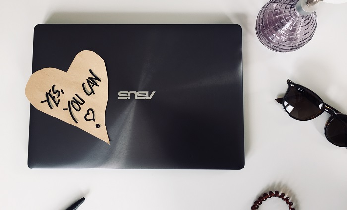

People and their stories are among the most exciting things for me and I love to be inspired by them. Whether they are people in my personal environment or people I 'met' in a podcast. There are countless interesting stories that can give you new ideas and thoughts. Stories that open your eyes and sometimes even give you the necessary push to try something new. For me, such stories often have a kind of 'coaching effect'. When I realize that I have found a story that touches, motivates or 'wakes me up' in a way, I listen to it again and again, store it in my head and bring it out when I need it.
In my case it wasn't a tech story that finally made me listen to my intuition, quit my job and learn programming. But it certainly would have helped me a lot.
It was rather different stories of people who at some point found that their job didn't fulfill them. People who have asked themselves how they can use their interests, strengths and time more meaningfully and satisfactorily than before. And who finally pulled themselves together and started something new.
I find these people absolutely admirable. From their stories I have learned above all that you can only win. The risk we often see in such situations is mostly just imagination. What could happen? After all, you can't tip over from the earth. And it's worth it. I have often found that I only go the extra mile for the decisions I am 100% behind - because it's fun. And exactly that reduces the risk of something going wrong.
Since I know how much energy and motivation there is in stories - especially in stories of people with whom one can easily identify - it is my goal to build up a collection of inspiring tech stories here. There are definitely some girls and women who have at some point found that they enjoy software development. Some may, like me, only after they have started their careers. Others already during school or studies. I would like to share their stories with you, tell you about their path and their reasons and encourage you to maybe even try it yourself. Maybe you hadn't even thought about it before. Maybe you discover parallels to your own life through the stories and become curious.
Of course, software development is not for everyone - just like not everyone wants to be a doctor or a confectioner or an architect. Nevertheless I am firmly convinced that everyone can learn software development and that it is only a question of motivation. So if you like to create new things with patience, structure and a lot of attention to detail, you might enjoy it as much as I do. A study has even shown that linguistic talent helps with development!
To collect as many inspiring stories as possible, I need your help. Do you know women who work as software developers and who would be willing to share their stories? I am happy about every tip!
Just write me an
email
or a message on
Linkedin.
Thank you so much! :)
Caro

On CoffeeCodeBreak I would like to introduce you to great women and girls,
who at some point in their life took the step into
software development. Female developers,
which show with their history that programming can be learned at any time. And that the courage is worth it.
Leave a comment
Feel free to leave me a comment. Your e-mail address will not be published. The fields marked with a * have to be filled out to send the comment. It may take a few hours until your comment is published.